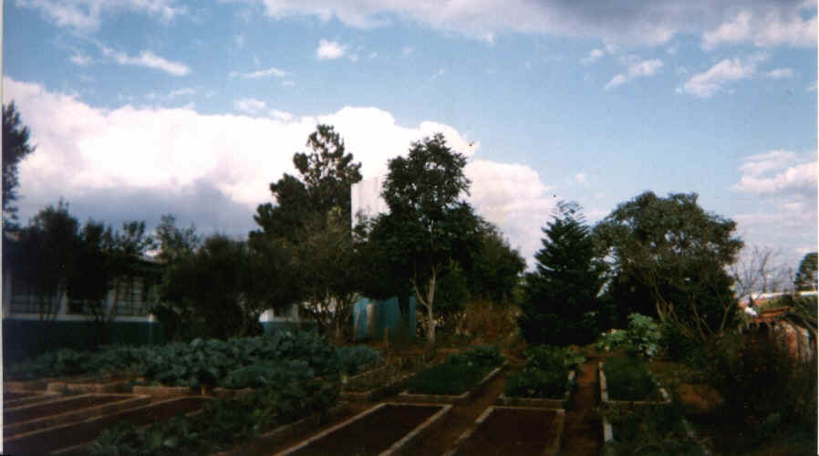
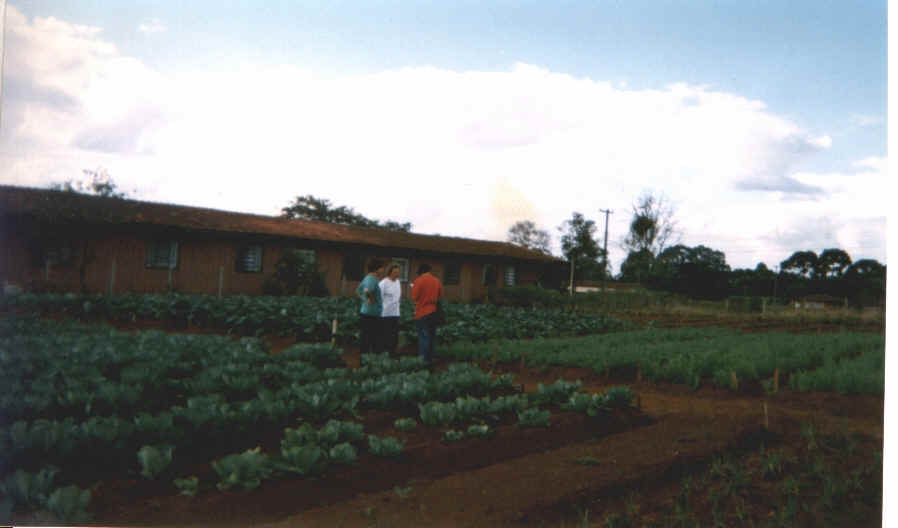
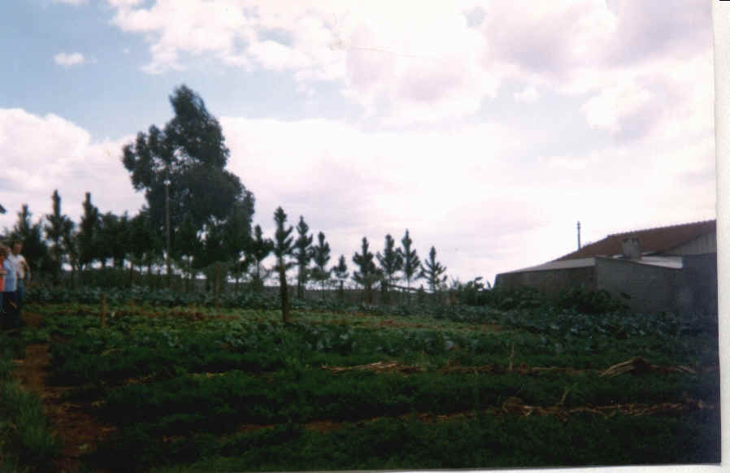
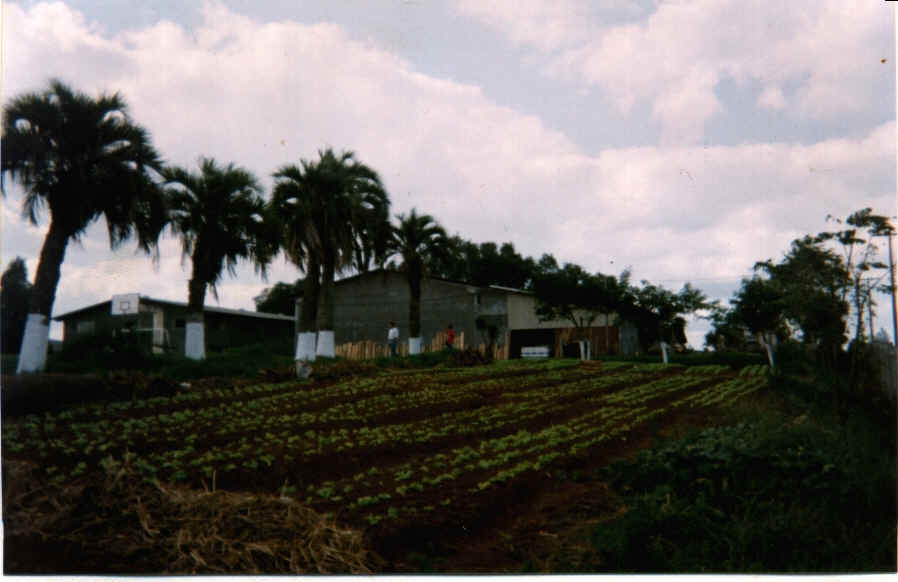

Dentro do programa de extensão rural do 3º ano os alunos eram encaminhados a outras escolas de Guarapuava onde coordenavam os alunos dessa escola no trabalho de construção e manutenção de hortas escolares.

Escola Santa Cruz

Escola Heitor Kramer

Escola Domingos Sávio

Escola Domingos Sávio